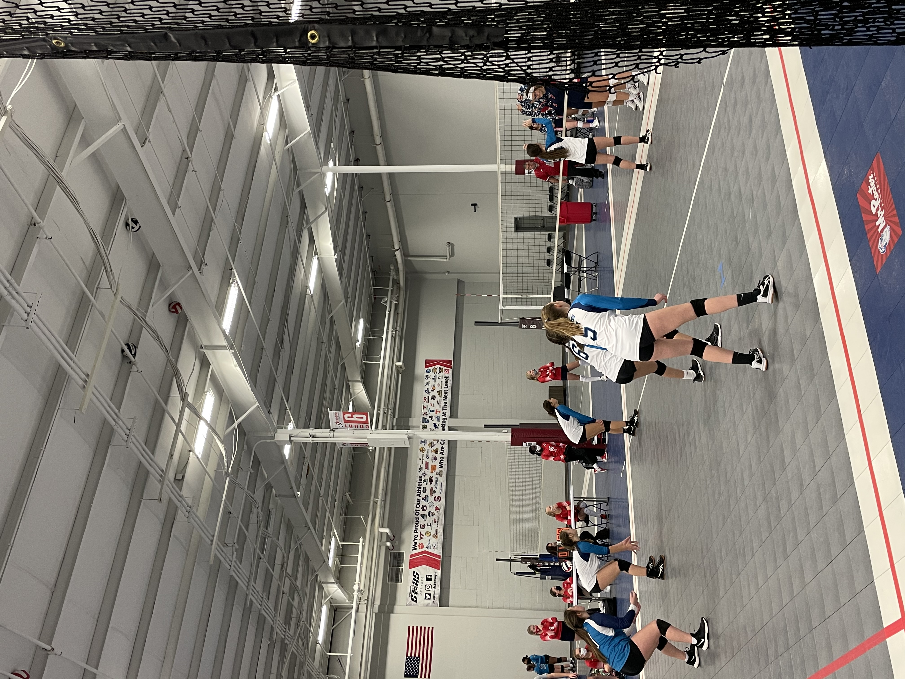
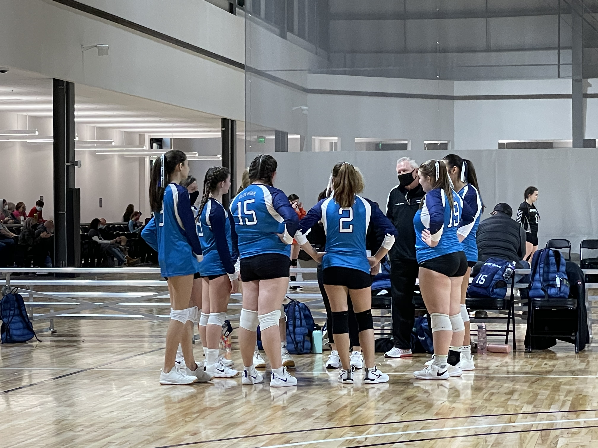

Blue Ridge Volleyball Club
Welcome to Blue Ridge Volleyball Club
Learn, Experience, Grow
Train With the Best!
Blue Ridge Volleyball Club is a competitive volleyball club with a mission to provide athletes with high-level technical and tactical skills in a positive learning environment that fosters personal growth and a passion for the game of volleyball. We offer varying levels of training, from beginner to advanced, and provide local clinics, summer camps, lessons, and travel teams. We have players come in at different levels and progress at different times, so our focus is for our athletes to develop confidence, discipline, and a sense of pride in having done their best to achieve individual and team goals. Blue Ridge Volleyball Club commits itself to preparing players to excel at the next level and to exemplify the utmost in character and competitive spirit on and off the court.


“Somewhere behind the athlete you’ve become and the hours of practice and the coaches who have pushed you is a little girl who fell in love with the game and never looked back… play for her.”
— Mia Ham
Our Vision
Blue Ridge Volleyball is a nonprofit Volleyball Club in the Upstate of South Carolina. Located in Seneca, we strive to help athletes develop their volleyball skills on the court. We hold a Christian based atmosphere that encourages our youth to be better individuals in the gym and out in the community.